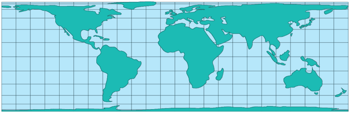

Lambert Cylindrical Equal Area (0 degrees)
Usage

Usage:*
The first Cylindrical
Equal-Area Projection was proposed by Johann Heinrich Lambert in 1772.
It has seldom been used, except as a textbook example of the most easily
constructed equal-area projection, but several modifications have been
published. The modifications consist of compressing the projection from
east to west and expanding it in the same ratio from north to south,
thereby moving the parallel of no distortion from the Equator to other
latitudes. Cylindrical Equal-Area Projections are not recommended for
world maps, because of extreme shape distortion away from the standard
parallels. Other equal-area projections have much less shape distortion
away from the parallels of true scale.
* Usage information source:
Snyder, John P., and Philip M. Voxland. Map Projections - A Working
Manual. U.S. Geological Survey Professional Paper 1453. Washington:
United States Government Printing Office, 1994.
Back to DSS Main Page